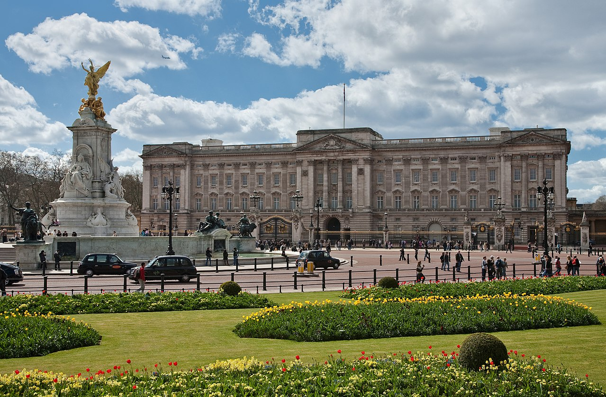

Palatul Buckingham
Palatul Buckingham este reședința principală din Londra a monarhilor britanici. Situat în Orașul Westminster, palatul este folosit pentru evenimente de stat și pentru cazarea invitaților regali. A fost centrul social al poporului britanic în momente de veselie și doliu național. Inițial cunoscut drept „Casa Buckingham”, clădirea care formează partea principală a palatului de astăzi a fost o casă construită pentru Ducele de Buckingham în 1705, pe care a Regele George III-lea a cumpărat-o în 1761 ca o reședință privată pentru Regina Charlotte, și a fost cunoscută drept „Casa Reginei”. De-a lungul secolului XIX-lea a fost mărită, în principal de arhitecții John Nash și Edward Blore, formând cele 3 colțuri din jurul curții centrale.
Palatul Buckingham a devenit oficial Palat Regal al monarhului britanic la urcarea pe tron a Reginei Victoria în 1837, fiind primul monarh care a avut reședința permanentă aici. Ultimele modificări structurale au fost făcute la sfârșitul secolului XIX și începutul secolului XX, incluzând fațada estică a palatului care cuprinde bine-cunoscutul balcon de unde Familia Regală salută mulțimile din Piața Victoria. Totuși Capela palatului a fost distrusă bombele germane în Cel de-al doilea război mondial ( 1940 ). În locul capelei, la sugestia Reginei și a Ducelui de Edinburgh , edificiul a fost recreat ca o galerie pentru colecția Regală "Royal Collection" în anul 1962. Ulterior, galeria a suferit diferite extinderi cât și o amplă renovare pentru a sărbători "Golden Jubilee" (50 de ani de la înscăunare) în 2002.
Interioarele originiale de la începutul secolului XIX, multe din care încă există, includ folosirea pe scară largă a foarte coloratei scangliola, albastru lapis și roz la sfatul lui Sir Charles Long. Regele Eduard al VII-lea a supervizat o parte din redecorări. Încăperile de stat, folosite în ceremonii oficiale și de stat sunt deschise publicului în fiecare an în august și septembrie, ca parte a Deschiderii de vară a Palatului. Uneori palatul este denumit colocvial ca „Buck House”